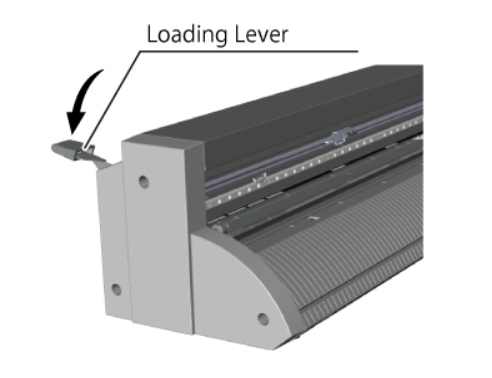
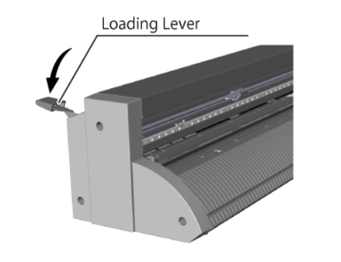

Question 1:
What color does the power button turn to indicate that the vinyl cutter is on?
Click on one of the following choices:
Purple
Red
Blue
Yellow

Question 2:
After cutting is complete (and you've sent the cutting carriage back to its home position), what do you gently do to the loading lever to release your material?
Hover over the image below to find out!
 

Question 3:
When you are ready to remove material from the vinyl cutter, which "Menu" item should you select to send the cutting carriage back to its home position?
Click on the menu display option to find out!
Instructions drawn from: Roland GS-24 User's Manual
Background image: Adobe Stock Image by Svetliy, Edu. License